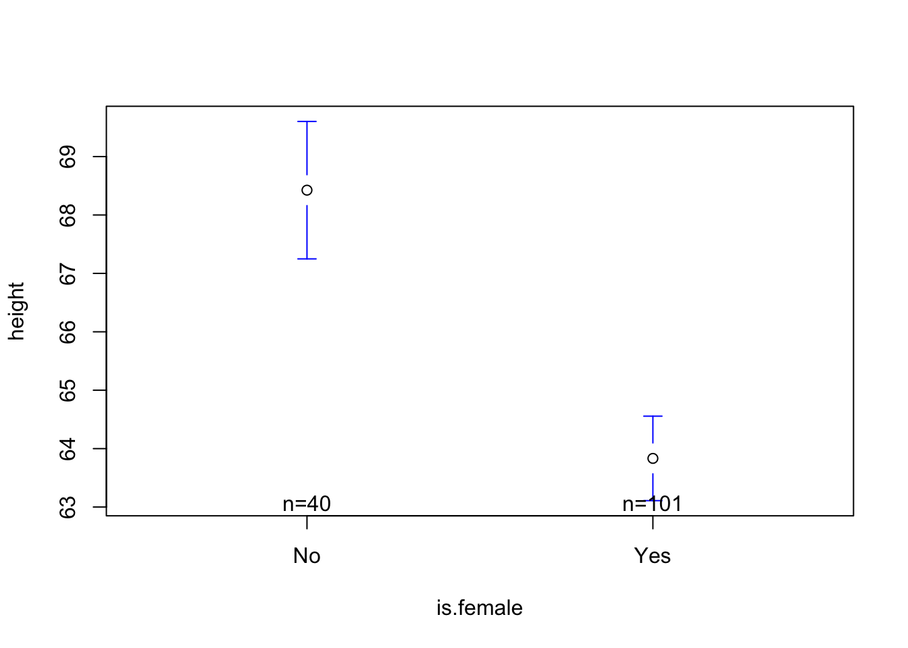
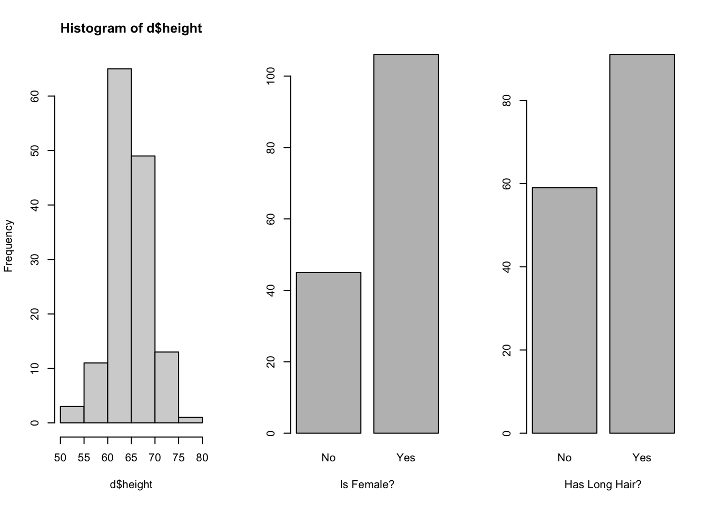

Work with a buddy, or go lone wolf, to test the following theories using the “cal_mini” dataset. Name the dataset d to follow along with the professor.
There is a relationship between how tired people are (DV = tired) and how bored people are (IV = bored).
There is a relationship between how tired people are (DV = tired) and how many hours of sleep people got (IV = hrs.sleep).
You and your buddy should each define and interpret ONE of the linear models above. Use the models to answer the questions below for the check-in?
What is the relationship between bored and tired (in “raw” / “unstandardized” units)?
Is this result statistically significant? Why / why not?
What is the relationship between hrs.sleep and tired (in “raw” / “unstandardized” units)?
Is this result statistically significant? Why / why not?
Which variable - bored or hrs.sleep - is a BETTER predictor of tired? Why / how do you know?
Professor Code Goes Here.
Agenda & Announcements
MEGA R Exam is NEXT WEEK.
Same format as Mini Exam. Take home, open note, on your own, make sure you adhere to ChatGPT policy (clearly stated that you used with complete documentation of your searches & the output in an appendix.)
85 Minutes (start at 2:10 PM –> submit by 3:25 PM)
128 Minutes for 150% DSP (will be marked as LATE so reminder reader you have DSP!)
170 Minutes of 200% DSP (will be marked as LATE so reminder reader you have DSP!)
Worth 24% of Your Grade; 15 Points on the Exam
Data Cleaning & Descriptive Stats [3 Points]
Defining and Interpreting Linear Models [7 Points]
Interpreting NHST Output [3 Points]
Interpreting Multiple Regression [2 Points]
Lab 8 : Take a practice exam & submit.
Milestone #4 : Due Sunday.
Milestone #5 : Draft!
Due Friday, May 2nd at 2:00 PM
Bring it all together!!!!
THE END IS NEAR
5/2 : Last Class : The learning has stopped. So what did we learn again?
moda <-lm(height ~ long.hair, data = d)summary(moda)
Call:
lm(formula = height ~ long.hair, data = d)
Residuals:
Min 1Q Median 3Q Max
-14.2143 -2.4129 -0.2143 2.5871 11.7857
Coefficients:
Estimate Std. Error t value Pr(>|t|)
(Intercept) 66.2143 0.5501 120.361 <2e-16 ***
long.hairYes -1.8013 0.7085 -2.542 0.0121 *
---
Signif. codes: 0 '***' 0.001 '**' 0.01 '*' 0.05 '.' 0.1 ' ' 1
Residual standard error: 4.117 on 139 degrees of freedom
(15 observations deleted due to missingness)
Multiple R-squared: 0.04443, Adjusted R-squared: 0.03756
F-statistic: 6.463 on 1 and 139 DF, p-value: 0.01211
plotmeans(height ~ long.hair, data = d, connect = F)
modb <-lm(height ~ is.female, data = d)summary(modb)
Call:
lm(formula = height ~ is.female, data = d)
Residuals:
Min 1Q Median 3Q Max
-11.833 -1.833 -0.425 2.167 9.575
Coefficients:
Estimate Std. Error t value Pr(>|t|)
(Intercept) 68.4250 0.5799 117.993 < 2e-16 ***
is.femaleYes -4.5923 0.6852 -6.702 4.72e-10 ***
---
Signif. codes: 0 '***' 0.001 '**' 0.01 '*' 0.05 '.' 0.1 ' ' 1
Residual standard error: 3.668 on 139 degrees of freedom
(15 observations deleted due to missingness)
Multiple R-squared: 0.2442, Adjusted R-squared: 0.2388
F-statistic: 44.92 on 1 and 139 DF, p-value: 4.724e-10
plotmeans(height ~ is.female, data = d, connect = F)

modc <-lm(height ~ long.hair + is.female, data = d)summary(modc)
Call:
lm(formula = height ~ long.hair + is.female, data = d)
Residuals:
Min 1Q Median 3Q Max
-11.2631 -2.0006 -0.2671 1.9994 9.7288
Coefficients:
Estimate Std. Error t value Pr(>|t|)
(Intercept) 68.2712 0.6010 113.599 < 2e-16 ***
long.hairYes 0.7375 0.7699 0.958 0.34
is.femaleYes -5.0080 0.8414 -5.952 2.1e-08 ***
---
Signif. codes: 0 '***' 0.001 '**' 0.01 '*' 0.05 '.' 0.1 ' ' 1
Residual standard error: 3.68 on 137 degrees of freedom
(16 observations deleted due to missingness)
Multiple R-squared: 0.243, Adjusted R-squared: 0.2319
F-statistic: 21.99 on 2 and 137 DF, p-value: 5.226e-09
IV1 and IV2 are related to each other, and each related to the DV)
plot(d$long.hair ~ d$is.female)

Multiple Regression : Visualized in Multi-Dimensional Space!
The code below may not work on your computer; see lecture recording for an interpretation / explanation!
#install.packages('rgl')#install.packages('car')library(car)library(rgl)scatter3d(as.numeric(d$is.female), # IV1 - must be numeric (if not already) d$height, # DVas.numeric(d$long.hair)) # IV2 - must be numeric (if not already)
Reporting Effects in a Regression Table.
Table 1. Unstandardized Regression Coefficients; Predicting Height from Long.Hair and Is.Female.
Model 1
Model 2
Model 3
Intercept
Long.Hair (0 = No; 1 = Yes)
Is.Female (0 = No; 1 = Yes)
\(R^2\)
There’s a Package in R For This!
# install.packages("jtools") # a new package!!!library(jtools) # make sure you installed the new package first.export_summs(moda, modb, modc,coefs =c("Long Hair (0 = No, 1 = Yes)"="long.hairYes","Is Female (0 = No, 1 = Yes)"="is.femaleYes"))
Model 1
Model 2
Model 3
Long Hair (0 = No, 1 = Yes)
-1.80 *
0.74
(0.71)
(0.77)
Is Female (0 = No, 1 = Yes)
-4.59 ***
-5.01 ***
(0.69)
(0.84)
N
141
141
140
R2
0.04
0.24
0.24
*** p < 0.001; ** p < 0.01; * p < 0.05.
BREAK TIME : MEET BACK AT 3:45
Multiple Regression Tables
ICE BREAKER : If you could learn one skill all at once (like Neo in the Matrix; have y’all seen that movie???), what would it be??
Evaluate the table above and think about multiple regression.
how would you write out Model 1, Model 2, Model 3, etc.
Model 1 :
what do we learn from this table / what changes in slope seem important (and why)?
what are some other real-life (and psychological) examples of situations where a 3rd variable might be important to study??
what is the multivariate regression you will include in your final project? why might this be interesting to test?
Milestone #4 : Anyone want to share their example?
Student Work Go Here.
Other Exam Questions / Practice
Miscelaneous Student Questions Go Here
Some Pre-Recorded NHST Review Videos
Note : I used last semester’s dataset for these examples, so you will likely get different results if you try and replicate in this semester’s class; a good example of how NHST doesn’t really tell us whether the results are “truth” or not, or whether they will replicate, etc.